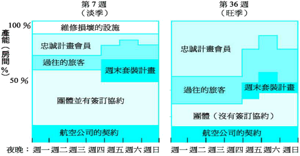
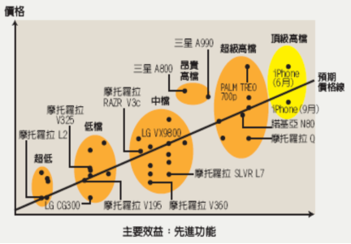

（1）除了提供面对面的服务外，________ 和 _______也是两种主要服务递送方法。
（2）顾客忠诚效应中的3R效应分别是指：________ 、________ 和 ________ 。
（3）传统4P之外，服务营销组合还包括：________ 、________ 和________ 。
（4）服务之花模型把扩展服务分为 ________ 和 ________ 两大类。
（5）服务质量要素的五个维度分别是：可靠性、响应性、________ 、________ 和 ________ 。
（6）完整服务产品概念包括：显性服务、隐性服务、________ 和 ________ 。
（1）服务过程矩阵中，顾客在资本密集的环境中得到无差别的服务，这是（ ）。
A服务工厂 B服务作坊 C大众化服务 D专业性服务
（2）服务过程矩阵中，允许有较多的服务定制，在劳动力密集环境下经营，这是（ ）。
A服务工厂 B服务作坊 C大众化服务 D专业性服务
（3）以下哪项是服务企业实施差异化战略的措施。（ ）
A 将标准产品定制化 B 顾客服务的标准化 C 非现场服务作业 D 降低网络费用
（4）以下哪项是服务企业实施成本领先战略的措施。（ ）
A 将标准产品定制化 B 减少服务传递中人的因素
C 使无形产品有形化 D 降低感知风险
（5）针对异质性的营销思路是（ ）。
A简化服务过程 B完善排队系统 C 服务产品有形化 D 提高顾客参与程度
（6）以下哪项措施能增加服务企业的供给能力（ ）。
A提高顾客参与程度 B提供价格诱因 C 开发预订系统 D促进非高峰期需求
（7）以下哪项不是顾客服务预期的来源。（ ）
A 服务承诺 B 服务接触 C 口头交流 D 过去的经历
（8）针对无形性的营销思路是（ ）。
A服务产品有形化 B 完善预约系统 C 选择高素质服务人员 D 简化服务步骤
（9）以下哪一项属于服务之花模型中的增值服务（ ）。
A 咨询 B资讯 C 结账 D 接受订单
（10）在服务质量差距模型中，差距2是指（ ）。
A 管理层未能正确理解顾客的期望 B服务绩效与服务承诺不相匹配
C 未按设计标准或规范提供服务 D 未选择正确的服务设计或标准
（11）在服务质量差距模型中，差距4是指（ ）。
A 未按设计标准或规范提供服务 B服务绩效与服务承诺不相匹配
C 管理层未能正确理解顾客的期望 D 未选择正确的服务设计或标准
（12）“没有人会离开，但是由于过度使用，顾客太多或已经超出员工提供稳定质量的能力，服务质量依然会受到损害。”这代表了能力与需求的哪种组合。（ ）
A 需求过剩 B 需求超过最佳能力 C 需求与供给在最佳能上平衡 D 能力过剩
（13）以下哪项措施是服务企业的需求管理能力（ ）。
A 提高顾客的参与程度 B交叉培训员工 C 提供价格诱因 D 雇佣临时工
（14）尾数定价策略所针对的顾客价值是（ ）。
A 价值就是低廉的价格 B 价值就是根据付出所能获得的质量
C 价值就是在服务中所需要的东西 D 价值就是全部付出所能得到的全部东西
（15）超值定价策略所针对的顾客价值是（ ）。
A 价值就是低廉的价格 B 价值就是根据付出所能获得的质量
C 价值就是在服务中所需要的东西 D 价值就是全部付所能得到的全部东西
（16）针对不可存储性的营销思路是（ ）。
A 服务产品有形化 B完善排队系统 C 运用高技术及IT系统 D 简化服务过程
（17）针对不可分离性的营销思路是（ ）。
A运用高技术及IT系统 B 完善预约系统 C 服务产品有形化 D促进人与人沟通成
（18）战略时钟模型中，对企业而言，最具备竞争优势的战略是（ ）。
A 路径2：成本领先战略 B 路径3：混合型战略
C 路径4：差异化战略 D 路径5：集中差异化战略
（19）战略时钟模型中，企业不能长期实施，必须有后续战略支持的是（ ）。
A 路径1：必要价值的战略 B 路径2：成本领先战略
C 路径4：差异化战略 D 路径5：集中差异化战略
（20）服务的不可存储性，所导致的管理挑战是（ ）。
A 同一种服务规范也会导致不同的服务结果 B 服务能力的设定非常关键
C 服务质量不可能预先“把关” D 服务创新无法用专利来保护
（21）某细分市场特征为：客户意识到该细分市场中的产品或服务的质量较低，但他们无力购买或不愿购买质量更好的产品或服务。战略时钟模型指出，企业可实施的战略是（ ）。
A 路径1：必要价值的战略 B 路径2：成本领先战略
C 路径3：混合型战略 D 路径4：差异化战略
（22）以下哪项不是完整服务产品的营销启示（ ）
A控制所有服务产品顾客接触点 B核心服务产品是成功决定因素
C关注互联网/自助服务的应用 D扩展服务形成差异化竞争优势
（23）在服务质量差距模型中，差距4产生的主要根源是（ ）。
A 管理人员认为没有必要确保服务质量达到或超过顾客期望
B 企业管理部门容易根据少数顾客的想法对所提供的服务进行片面理解
C 企业的广告策划人员缺乏与服务运营部门的交流
D 服务人员，无论愿意如何总是没有能力按照服务标准为顾客提供服务
（24）“顾客在等候时看到有人插队时会感到恼怒”，这种现象所对应的顾客心理是（ ）。
A 焦虑使等待感觉更长 B 不确定的等待比已知的等待感觉更长
C 没有解释的等待比有解释的等待感觉更长 D 不公平的等待比公平的等待感觉更长
（25）以下关于服务的说法，哪一项是不正确的（ ）。
A 服务的销售受有形商品的限制 B服务不造成所有权的转移
C 服务产品是无形的行为 D 顾客很难对服务进行评估
（26）服务设计方法中的工业化方法其缺陷主要体现在（ ）。
A 难以满足顾客的个性化需求 B服务系统的运营效率较低
C前台与后台不易达到良好的划分和衔接 D 员工自主权加大导致管理难度增加
（27）在服务质量差距模型中，差距1产生的主要根源是（ ）。
A 管理人员认为没有必要确保服务质量达到或超过顾客期望
B 企业管理部门容易根据少数顾客的想法对所提供的服务进行片面理解
C 企业的广告策划人员缺乏与服务运营部门的交流
D 服务人员，无论愿意如何总是没有能力按照服务标准为顾客提供服务
（28）在顾客满意和顾客忠诚的关系中，以下哪一项不正确（ ）。
A 衡量顾客忠诚的唯一尺度就是看顾客是否重复购买企业的产品或服务。
B 在竞争性市场中，只有当顾客满意水平非常高时，顾客忠诚现象才会出现。
C 竞争对手价格或促销等方面的诱惑通常不会对顾客忠诚产生强烈的冲击作用。
D 满意不一定忠诚，不满意也不一定不忠诚。
（29）房地产代理商只关注移居国外的顾客。这是局限性很大的市场，但公司认为它们可以利用有限的服务能力。这属于哪一种营销策略（ ）。
A 全面焦点策略 B服务焦点策略 C 市场焦点策略 D 无焦点策略
（30）旅游公司只提供具有冒险性很高的旅游服务属于那一项策略（ ）。
A 全面焦点策略 B服务焦点策略 C 市场焦点策略 D 无焦点策略
（31）哪一项不是一间服务公司的扩展服务? （ ）
A航空公司向商务舱顾客提供休息室 B档次较高的饭店会提供代客泊车
C牙医诊所在侯诊室放置新杂志 D麦当劳向客人出售汉堡包
（32）在银行顾客接触的程度上，属于中接触服务的是哪一项? （ ）
A零售银行 B电话银行 C电子银行 D 贵宾理财
（33）给顾客提出正确建议是属于酒店质量的哪一方面?
A可靠性 B移情性 C 保证性 D 响应性
（34）微软除将WORD等应用软件捆绑在OFFICE销售外，还可单独销售，属于（ ）
A 强行捆绑 B 搭配组合 C 自愿捆绑 D 对等组合
（35）以下哪项不是顾客保留策略的主要形式
A 简化流程以提供标准化服务 B仅提供有限信息影响顾客选择
C提高转移成本限制顾客转移 D针对顾客信息系统进行二次开发
| 1 | 2 | 3 | 4 | 5 | 6 | 7 | 8 | 9 | 10 |
| A | D | A | B | D | A | A | A | A | D |
| 11 | 12 | 13 | 14 | 15 | 16 | 17 | 18 | 19 | 20 |
| B | B | C | A | B | B | B | B | A | B |
| 21 | 22 | 23 | 24 | 25 | 26 | 27 | 28 | 29 | 30 |
| A | A | C | D | A | A | B | C | C | D |
| 31 | 32 | 33 | 34 | 35 | |||||
| D | B | B | C | A |
（1）Empathy
（2）Physical Evidence
（3）Service Flower Model
（1）根据服务的四个基本特性，论述服务营销管理的特殊性。
（2）当服务直接接受对象是人时（对待人的服务），论述管理上的关键要素。
（3）参照下图，论述酒店经营者如何在淡季和旺季进行供需匹配管理。
（1）阅读下图，回答以下问题。
1、分析图示手机市场的竞争态势 （3分）
2.分析摩托罗拉手机面临的竞争环境 （3分）
3、论述苹果IPHONE的入市策略 （5分）